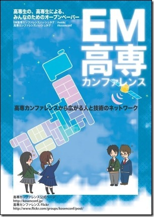
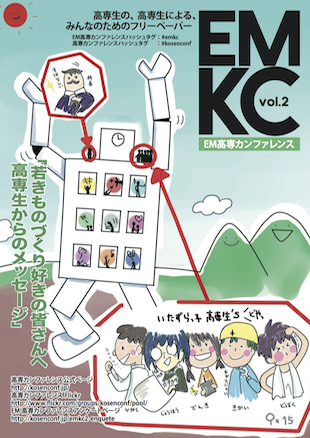

EMKC-Online::Alpha
EMKC-Online::Alpha
現在のお知らせ
広告を募集しています。詳しくは広告募集をご覧ください。
高専の、高専生による、みんなのためのフリーペーパー
EM高専カンファレンスは高専やそのOBが作成しているフリーペーパーです。これまでに2号発刊されています。現在、全国で配布中です。また、オンラインのビュワーでも閲覧することができます。
バックナンバー
第1号
- 発行日: 2011年2月4日
- 発行元:株式会社マナスリンク
- 価格: 無料
- 発行部数: 3,000部, 増版: 1,000部
- サイズ: A4, カラー
- ページ数: 28頁
第2号
- 発行日: 2012年7月12日
- 発行元: 株式会社マナスリンク
- 価格: 無料
- 発行部数: 8,000部
- サイズ: A4, カラー
- ページ数: 40頁
オンラインビュワーよりご覧になれます！
高専カンファレンスとは？
「高専カンファレンス」とは、その名称を用いて行われる、高等専門学校および高専生をテーマとする、勉強会をはじめとした各種活動（以下、「個別の活動」と言う）の総称、およびその集合体（以下、「コミュニティ」と言う）の名称のことを言います。
2008年6月の小さな集まり以降、高専特有のバイタリティ・結束感が生み出す高専内外のつながりを活かし、現在では既存の高専の枠組みを越え、全国的に広がっています。
広告募集
EM高専カンファレンスでは、広告を掲載して頂けるスポンサーの方を募集しています。広告掲載に必要な費用は以下の通りです。

- 1p - 10万円＋税
- 1/2p - 7万円＋税
- 1/3p - 5万円＋税
- 1/8p - 1万円＋税
(※デザイン料は別途)
広告はオンライン版公開時にも、印刷版と同様に掲載致します。広告掲載を希望するスポンサーの方は、以下の編集部メールアドレスまでご連絡ください。
contact@manaslink.com